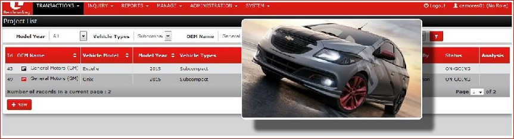
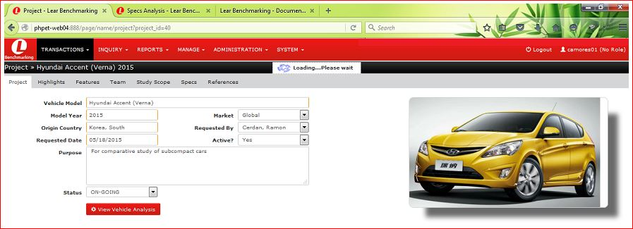
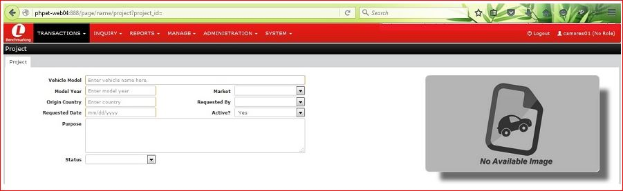

Transactions ► Build Projects and Components
» In the Menu , click  then select
then select  in the sub-menu dropdown to open the "http://phpet-web04:888/page/name/projectlist Page".
in the sub-menu dropdown to open the "http://phpet-web04:888/page/name/projectlist Page".

» To display "filtered" projectlist page: Click-select or enter the values for Model Year, Vehicle Type, OEM Name, Status, and Active, then click the  icon.
icon.
example of filtered result:

» IMAGE ICON -- Mousehover on any of the  icon to show/display the " CarBox ".
icon to show/display the " CarBox ".

» Select and click on the corresponding " project id number " under the " Id Column " to show/display the project data per vehicle.

» VIEW VEHICLE ANALYSIS BUTTON -- Click  button to display Specs Analysis Page of the vehicle selected.
button to display Specs Analysis Page of the vehicle selected.

» NEW BUTTON -- Click  button to display "http://phpet-web04:888/page/name/project?project_id=" Page. Enter details required, then click save.
button to display "http://phpet-web04:888/page/name/project?project_id=" Page. Enter details required, then click save.

Transactions ► Vehicle Components Analysis Comparison
» In the Menu , click then select  in the sub-menu dropdown to open the "comparativeAnalysislist Page".
in the sub-menu dropdown to open the "comparativeAnalysislist Page".

» To view or edit the "Comparative Analysis Entry" in the list, click on the corresponding "id no." under the Id column of the selected Report entry to open the "Comparative Analysis Entry Page".

» Notice the  , "car_id = id no." selected under the id column selected on Comparative Analysis List.
, "car_id = id no." selected under the id column selected on Comparative Analysis List.
» To view the "Comparative Analysis Report", select/set the prefered baseline for car analysis under the "Baseline?", then click  to open the "Comparative Analysis Page".
to open the "Comparative Analysis Page".

» Another way to access the "Comparataive Analysis Report Page" is by clicking on selected "report icon"  in the Comparative Analysis Main Page.
in the Comparative Analysis Main Page.
» To view or edit the Analysis of the selected Property, click on the icon under "Engr. Analysis Column"  to open the "Analysis for » __ Window"
to open the "Analysis for » __ Window"